肉球シルエット [梅吉]
前線の影響による大雨、大変な被害になってしまいました。
被害に遭われた方にはこころよりお見舞い申し上げます。
今度は台風８号が迫っているとのこと。
これ以上の被害が出ない様祈るばかりです。
大雨が降り始めた６日頃、我が家付近の雨量も相当なものだったので
近くを流れる川の様子をwebカメラで確認しようと府・市のHPをチェックしました。
が、情報が見つからない・・・
おっとが国の管理の河川じゃないの？と言うので国土交通省のHPをチェックすると
川の情報、載ってました。
こういう情報って一括して提供できないものなのでしょうか。
少しでも早く情報を得たい時、あちこち探し回るのって結構なストレスです。
国の管理、府の管理、市の管理・・・川に関しては住民にはあまり関係ないんですけど・・・
まして、大阪は河川がとっても多いのです。
この川はどこの管轄って正しく理解している住民がそんなに多いとも思えません。
なんとかできないのかなぁ。。。
それとも私が知らないだけで一括して情報提供してくれるところ、あるのかしら？
･゜ﾟ･*:.｡..｡.:*･゜ﾟ･*:.｡. .｡.:*･゜ﾟ･*･゜ﾟ･*:.｡..｡.:*･゜ﾟ･*:.｡..｡.:*･゜ﾟ･* ･゜ﾟ･*:.｡..｡.:*･゜ﾟ･*:.｡. .｡.:*･゜ﾟ･*･゜ﾟ
キャットトンネルはもはや梅吉さんの生活必需品となっております。
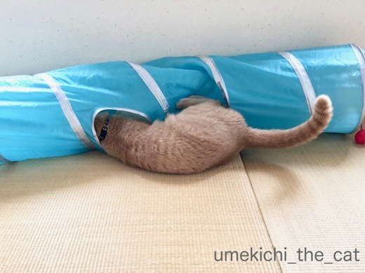
横穴の使い方はダイブから
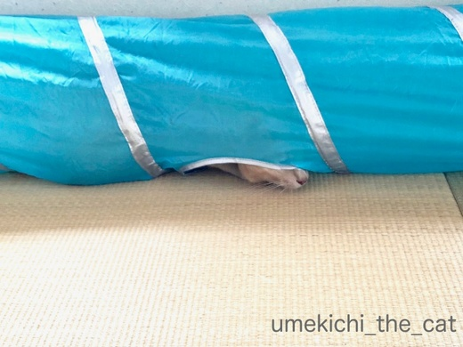
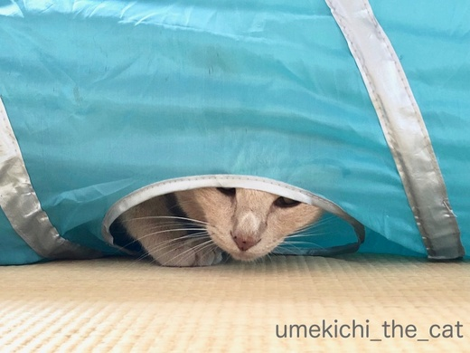
一工夫見られる様になりました＾＾
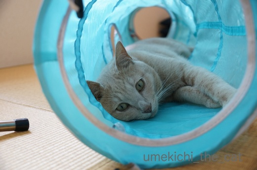
最近はトンネルの中で本気で寝ちゃう様にもなりました。
一度寝てしまうと可愛いお姿が拝見できないので
下僕は時々（いえ、頻繁に、入れ替わり立ち替わり）覗きに行きますw

これは素敵な眺めー(〃▽〃)
この状態をトンネルの外から見ると

肉球のシルエットが！！！
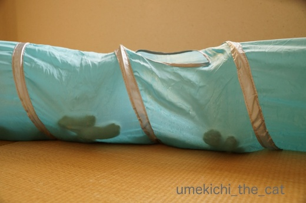
浮かび上がっています！！！きゃ〜〜〜Ｏ(≧▽≦)Ｏ
こういうトンネルの使い方？鑑賞の仕方？？も良いものですね＾＾
トンネルで遊び倒す梅吉さん。
 ↑ガブッと一押し↑
↑ガブッと一押し↑
実家からメロンが送られてきました。
やったー！夕張メロン(๑˃̵ᴗ˂̵)و
（実家で作っているんじゃないですよ）
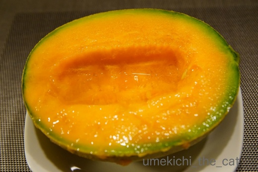
他のおかずをを控えめにして夕食のメインはメロンにv
我が家は一人半分を食します！！
メロンディナーでございました＾＾
週末はハスを見に行ってきました。まさに見頃。
ハスも綺麗だったのですがさらに心奪われたのがこのトンボ。
工芸品？宝石？？のような美しい羽。
とまっているのも美しいのですが飛んでいる様子はさらに美しかったです。
しばし見とれてしまいました・・・
残念なのはトンボの名前が分からないー![[がく～（落胆した顔）]](https://blog.ss-blog.jp/_images_e/142.gif)
被害に遭われた方にはこころよりお見舞い申し上げます。
今度は台風８号が迫っているとのこと。
これ以上の被害が出ない様祈るばかりです。
大雨が降り始めた６日頃、我が家付近の雨量も相当なものだったので
近くを流れる川の様子をwebカメラで確認しようと府・市のHPをチェックしました。
が、情報が見つからない・・・
おっとが国の管理の河川じゃないの？と言うので国土交通省のHPをチェックすると
川の情報、載ってました。
こういう情報って一括して提供できないものなのでしょうか。
少しでも早く情報を得たい時、あちこち探し回るのって結構なストレスです。
国の管理、府の管理、市の管理・・・川に関しては住民にはあまり関係ないんですけど・・・
まして、大阪は河川がとっても多いのです。
この川はどこの管轄って正しく理解している住民がそんなに多いとも思えません。
なんとかできないのかなぁ。。。
それとも私が知らないだけで一括して情報提供してくれるところ、あるのかしら？
･゜ﾟ･*:.｡..｡.:*･゜ﾟ･*:.｡. .｡.:*･゜ﾟ･*･゜ﾟ･*:.｡..｡.:*･゜ﾟ･*:.｡..｡.:*･゜ﾟ･* ･゜ﾟ･*:.｡..｡.:*･゜ﾟ･*:.｡. .｡.:*･゜ﾟ･*･゜ﾟ
キャットトンネルはもはや梅吉さんの生活必需品となっております。
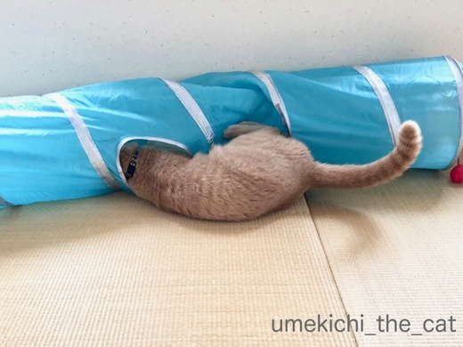
横穴の使い方はダイブから
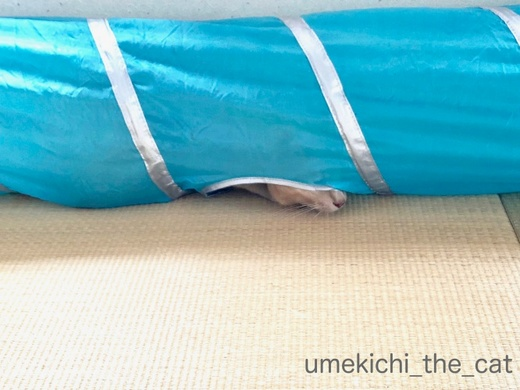
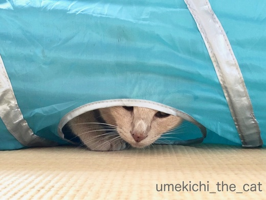
一工夫見られる様になりました＾＾
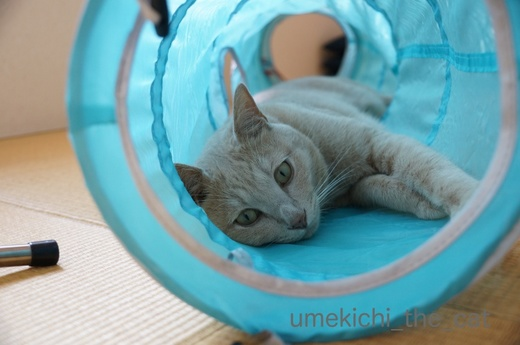
最近はトンネルの中で本気で寝ちゃう様にもなりました。
一度寝てしまうと可愛いお姿が拝見できないので
下僕は時々（いえ、頻繁に、入れ替わり立ち替わり）覗きに行きますw

これは素敵な眺めー(〃▽〃)
この状態をトンネルの外から見ると

肉球のシルエットが！！！
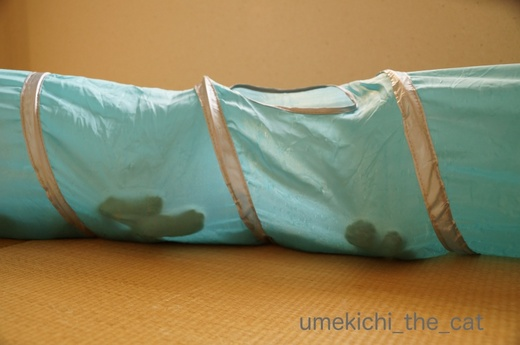
浮かび上がっています！！！きゃ〜〜〜Ｏ(≧▽≦)Ｏ
こういうトンネルの使い方？鑑賞の仕方？？も良いものですね＾＾
トンネルで遊び倒す梅吉さん。
実家からメロンが送られてきました。
やったー！夕張メロン(๑˃̵ᴗ˂̵)و
（実家で作っているんじゃないですよ）
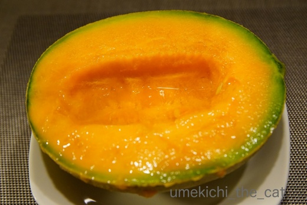
他のおかずをを控えめにして夕食のメインはメロンにv
我が家は一人半分を食します！！
メロンディナーでございました＾＾
週末はハスを見に行ってきました。まさに見頃。
ハスも綺麗だったのですがさらに心奪われたのがこのトンボ。
工芸品？宝石？？のような美しい羽。
とまっているのも美しいのですが飛んでいる様子はさらに美しかったです。
しばし見とれてしまいました・・・
残念なのはトンボの名前が分からないー

カフェオレ色の梅吉

梅吉 2023年8月10日 永眠


梅吉と出会った譲渡会

犬猫の理由なき殺処分ゼロ
妄想広告
UMEKICHI 光

爆発的に早い！
時々攻撃的！
Thanks to Mr.Boss365
爆発的に早い！
時々攻撃的！
Thanks to Mr.Boss365

二重行政ならぬ三重行政なのかしら(´ヘ｀;)
梅吉様、最初、トンネルから出て来ないから、
このままトンネルを壊しちゃうのかと(^_^;)
ルネ・ラリックのトンボのようです(〃'∇'〃)
by middrinn (2018-07-09 08:28)
確かに川の管轄なんて知らない；；
うちの近くを流れる隅田川がどこの管轄かもしらないです！
肉球シルエットいいねー。
これは萌えちゃうわ^m^
わたしね、東京に出てきたときスーパーに売られているカットされたメロンを見ていて、なんで熟してないのを売ってるんだろうってずっと思っていたの。
友達に言ったら大笑いされたよ。
夕張メロンしか知らない贅沢者め！って言われたわｗｗ
メロンの果肉はオレンジだと思っていたよｗｗ
メロンってもらい物でしか食べたこと無かったから ^m^
by リュカ (2018-07-09 10:12)
おはようございます。
住民ファーストの公共サービスが必要ですね！！
被害拡大が続いているので、迅速な支援をして欲しいです！？（⌒ー⌒）
梅吉君のトンネル内・後姿は、萌え写真ですね！！
トンネル壊しそうですが・・・いい感じで遊んでますね！！
メロンディナー・・・大人喰いですね？小さい頃憧れました！！
トンボの写真タイトルが決まりました！！
「トンボに美しさを奪われたハズ（蓮）」ですね！？(=^･ｪ･^=)
by Boss365 (2018-07-09 10:32)
災害情報は一括でまとめてくれた方が
皆様使いやすいですよねぇ(*_*)
被害がこれ以上広がらずに皆様に一日でも早く日常が戻りますように<(_ _)>
梅吉さん、プリティーなおちりと後ろ足に萌えます(^O^)
肉球シルエット、こんなのを見たら思わずツンツンしたくなっちゃいます(^-^)
by ニッキー (2018-07-09 12:30)
お尻尾、足裏、オチリの三重奏♪ 最高ですね(#^^#)
梅吉さんは全部カフェオレ色なんですね！
ウチのは尻尾裏は真っ白、足裏は真っ黒、オチリはミックスです^^;
トンネル入りびたりは寂しいかと思いきや、楽しみ方がいっぱいだ♪
透けて見える肉球も猫変態心をくすぐります。
青いトンボも美しい♪
チョウトンボかな？？ このままブローチにしたい^^
by ゆきち (2018-07-09 12:35)
確かに言われてみれば、河川の管轄なんて
知りませんでした・・・
我が家の近くにも川があるので
いざというときのためにも
ちゃんと確認しておきたいと思います。
かなり低い地域なので、
目の前が膝上まで浸水したこともあるので
気を付けたいと思います！
梅吉さんを覗きに♪
何回でも行っちゃいますよねぇ～(#^.^#)
見に来られるのは、うっとおしいと
思われているかもしれませんが
私も毎回、覗いて、ナデナデしちゃいます♪
by きぃ (2018-07-09 13:15)
そうなんですよね。
緊急で知りたいのに、まったく緊急でわからないこと、多々あります。
ヤフーＴＯＰみたいに、緊急のものがすぐ目に入る＆
コンテンツのわかりさすさを、もっと重要視してほしいです。
梅吉さん。ブルートンネルに、それこそ入り浸りなんですねｗ
いいなぁ。見ているこっちが、シアワセ＆ニンマリになっちゃいますなぁ。
オバちゃんがもっとスレンダーバディだったら、一緒にＩＮして遊びたいわぁ～。
夕張メロンは、マジ美味しいです！！
3年前、オカンと富良野に行ったとき、ラベンダーをろくに見ず、
メロンばっかり、むさぼり喰ってたのを思い出しましたｗｗｗ
アイスクリームがトッピングされた、ハーフメロン。おいひかったぁぁ。
by morichan (2018-07-09 13:45)
梅吉さんかなり激しく遊んでますねー。うちに昔置いてあったトンネルはゴンがすぐに破いてしまいました。これを見るとまた買いたくなっちゃう。
メロンの大人喰いはうちでもやってます。単に二人しかいないからですが、種の部分もザルでこして、しっかりジュースを取り、製氷皿で凍らせてアイスキャンディにします。
by zombiekong (2018-07-09 15:18)
梅吉さんの肉球のシルエット、なかなの芸術品ですね。
でも、あまり動きが激しすぎて、トンネルの寿命が早まりそうな気もします(^_^;)
昨年の豪雨でも近くの2本の川が氾濫寸前まで行き、ダメかな・・・と思いましたが、一部の道路の冠水でおさまりホッとしました。でも、隣の町村は大変な被害を受けてしまいました。
やはり、情報の伝達方法に問題有りとこの時に思いました。
by kou (2018-07-09 17:12)
素敵な眺め～～～～です、確かに（笑）
ウチも、また猫ちゃんを迎えようかな～～。
by angie17 (2018-07-09 18:00)
滅多にお目にかかれない、お尻姿（笑）
なんと愛らしい。
揃えたあんよが良いで良い。
こんなにリラックスして寝られると幸せですね。
夕張メロン、甘い香りが届くようです。
半分食、良い響き（笑）
羨ましいぞ〜
by kiki (2018-07-09 18:03)
梅吉さん、トンネルで爆睡して肉球のシルエットを残しているのですね！夕張メロンは美味しいですよね！
夕張に行ったときに沢山売っていました(^^)
by ma2ma2 (2018-07-09 19:31)
チョウトンボです。
by riverwalk (2018-07-09 20:05)
河川のライブカメラHP、確かに探すの難しいですよね。
トンネルで一休み？の梅さんのおちりが可愛い！^^;
わが地方の渥美半島はメロンの生産地なのですが
悲しいかな、私の口の中にはめったに入ってきません。。。(T_T)
by yes_hama (2018-07-09 22:14)
光の具合が絶妙ですね。にくきゅう♡（*´∀｀*）
こういうトンネルあったら、たぶんわたし
トンネル越しにわしゃわしゃやる気がする・・・
うちの母もメロン大好きです・・・が
わたしが苦手なので、ひとりで食べる勇気があるときにしか
買ってこられないようです・・・(｡-_-｡)
トンボ、すごい鮮やかな青（碧？）ですね〜
by Ja-Kou66 (2018-07-09 23:18)
大雨、大変なことになりましたね。
情報はあちこちですぐわかるようにして欲しいですよねえ。緊急な時、調べる方も焦ってるのに。
梅吉さん、楽しんでますね～寝姿、可愛い！
きゃあ、肉球シルエット♪ 遊び倒してますね＾＾
メロン、美味しそう～！
宝石みたいなトンボ、綺麗～！
チョウトンボじゃないですか＾＾
https://blog.goo.ne.jp/gunma-daisuki/e/158511c5375921ddc88858ae9c1c8a03?fm=entry_awc
by sana (2018-07-10 01:07)
梅吉さん、大興奮で遊んでいますね。
by ニコニコファイト (2018-07-10 06:49)
寝てるソックス君の肉球を触ったら怒られました＾＾；
by ぽちの輔 (2018-07-10 06:52)
メロンディナーが素敵すぎて、朝から
会社に行く気がしませんー(≧∀≦)！
by よーちゃん (2018-07-10 08:30)
肉球シルエット。可愛い～♪
中でお休み中のおちりからのショットもいいね。むちむちだよ～(≧▽≦)
エアコンのきいた部屋で、このシャリシャリトンネルもひんやり冷たくなるのかな？
私だって入り浸りたくなるよ。きっと♪
メロンディナー！夕張メロン美味しいものね。
毎年贈ってくれているのかな？前にもちぃさんの記事でよだれじゅるるだった覚えがあるよ～(*^-^*)
by emi (2018-07-10 17:04)
梅吉さん、トンネル遊び、サイコーだね(≧▽≦)
あかりも、トンネルの中から肉球を突っ張ってきたら
私が人差し指でぷにぷに押して構うのですが、
私の指にパンチが飛んできます～((´∀｀))
by マーヤ (2018-07-10 20:23)
middrinnさん＞
河川の管理、国や都道府県などなどそれぞれが管理する事情も
わかる（ような）気もするのです。
が、災害情報としてどこかが一括してまとめてくれないかなぁと
思っているのですが・・・
官庁にありがちなリンク切れも
ちゃんと定期的にチェックして(^_－)☆
そう！このトンボ、ラリックっぽい！！
アール・ヌーヴォーなトンボ、トンボといえばアール・ヌーヴォー＾＾
リュカさん＞
河川だけじゃなく山にもいろいろあるのかなって思いました。
山なら噴火情報、土砂崩れそれぞれ管理するところがちがって
さらに混乱しそうだって思いました（←調べたわけじゃないから違うかもw）
自然災害の多い国なのに！！
肉球シルエット良いでしょ＾＾
手触りも（トンネルの）シャカっと感と（肉球の）もちっと感が
楽しめるんだよぉぉぉーーＯ(≧▽≦)Ｏ
うちも子供の頃メロンって買ってなかった様な気がする。
どこかから回ってくるもの。
おばあちゃんちやその他親戚でもつくってたからそれが送られてきたり。
青いメロンは私も大人になってから初めて食べたよ。
赤肉育ちwww
今でもメロンは赤肉派！青も美味しいけどなんか損した気がする(^▽^;)
Boss365さん＞
公官庁まとめサイト、日本防災HPみたいなのが
あればいいのになって思いましたよー。
官庁あるあるなリンク切れはなしで！！
私も大人喰いは憧れた物がたくさんあります＾＾
いざ出来る様になると、太るから、胃の調子が悪くなる、を経て
そんなに食べられない・・・になってきて
ちょっと寂しいでーすwww
ハズ＝蓮、上手い！！座布団三枚！！
（梅吉は永遠に座布団三枚の男、なんですよwww）
ニッキーさん＞
災害情報は官庁（または都道府県・市）の区分は無しでお願いしたいですよね！
今回の大雨、
台風じゃないのにこんなに被害が出るなんて、と驚いています。
本当に１日も早く日常が戻る様祈らずにはいられません。
肉球シルエット、私はにぎにぎしちゃいますよw
シャカっとした布越しの肉球の感じ、なかなかのものですよーＯ(≧▽≦)Ｏ
ゆきちさん＞
ツウ好みの三重奏ですよね( ´艸｀)
こてつくんの尻尾裏が白とは気づきませんでした！
びっくりすると「ぶわっ！」っと広がるとか！？
（エゾシカのお尻がそうなりますw）
おっしゃる通り梅吉は全身カフェオレです＾＾
よーく見ると被毛に一定割合で黒い毛が混ざっていて
おヒゲは白と黒、あるいは白黒のグラデーションになっています。
父母、どちらかがクロネコだったかも。
とんぼ、チョウトンボです！確認しました！！
確かにトンボとは違う不思議な飛び方していましたよ。
ありがとうございます＾＾
また見ることができるといいな♪
きぃさん＞
ご近所で膝上まで浸水！！それは怖いですね。
近くの川の様子、webでチェックできるのか
一度確認しておいてくださいね！！
で、ブックマークをした際には定期的にチェックをすることもお勧めします。
公官庁のHPってリンク切れになることが結構あるのです。。。
梅吉はかまってちゃんなので覗かれると
ゴロゴロ言う時もあるんですよ＾＾
きっと覗かれるのを待っているに違いないです ( ´艸｀)
morichanさん＞
そうなのー！各官庁のHPに行ってもどこに情報があるのか
一目で探せないw
詳しい情報は「インターネットのHPで」なんて言っている割に
行き着くまでに探さなきゃならないと言う・・・
世の中ネットに慣れた人ばかりじゃないのにね！
あはは＾＾トンネルに入ろうと思ったら“棒”みたいな人じゃないと！
肩幅もめっちゃ狭い！！
でも大丈夫、顔だけは入れれますよ。おっとがよくやってますが
梅吉がとっても迷惑そうな顔して出てきますよwwwww
ラベンダーよりメロン！正解！！
ここだけの話ラベンダー畑はテレビや写真で見る方がキレイだし・・・
メロン時期の北海道を旅するときは果物ナイフと
スプーン、お手拭きを持ち歩くことをお勧めするわー！！
zombiekongさん＞
ゴンちゃんも昔よりは丸くなった（？）かもしれないので
トンネル再購入いかがですか？( ´艸｀)
わらわらとにゃんこが集まってきて大運動会になりそうな気が！！
メロンの種部分の活用法、素晴らしいです！！
私はなんてもったいない事をしてきたのかしら・・・
（べろーっと捨ててましたw）
今度やってみまーす(^_－)☆
kouさん＞
トンネルの寿命はもう長くはないかと思います(*>艸<)
みすぼらしいのを気にしなければ破れていた方が
楽しく遊ぶ予感すらしていますよw
昨年の新潟の豪雨もひどかったですよね・・・
その後情報の伝達方法は改善されたのかもしれませんが
災害が起きてみないとその有効性を検証できないのも
もどかしい・・・
angie17さん＞
猫、飼われていたのですね！！
どうですか？どうですか？毛深いご家族お迎えになりませんか(๑˃̵ᴗ˂̵)و
我が家は梅吉のみと決めているので
知り合いが「猫を迎える」と聞くと訳もなく嬉しくなっちゃいます！
若い人の恋話を聞いて嬉しくなっちゃうおばちゃん、と同じ心理ですwww
kikiさん＞
お尻のみのショットは今までなかったかもしれませんね！
私一人で「むふっ♡」っと楽しんでいないで
もっとブログに載せなくっちゃ(^_－)☆
メロン、宅配のお兄さんが持ってきてくれた時から
隠しきれない香りが漂っていましたw
お兄さん小さな声で「メロンだぁ・・・」って( ´艸｀)
届いた時がちょうど食べごろでしたよー。
ma2ma2さん＞
熟睡してむぎゅーっと肉球を押し付けていましたよw
私が自腹で買うなら南富良野、穂別、ニセコあたりの
メロンを買います！
同じ赤肉だけど「夕張」が付かないので安い！
味もほとんど変わりません！！
riverwalkさん＞
チョウトンボ、了解です！！
奥様もriverwalkさんもお辛い時期かもしれませんが
やさしいご家族の協力があれが大丈夫！乗り切れますよ！！
それにしても人ごとではありません・・・
yes_hamaさん＞
今回の事もありしっかりブックマークしました(｀_´)ゞ
あとはリンク切れを定期的にチェックしようと思っています。
（官庁のHPあるあるw）
調べて見たら・・・渥美半島はマスクメロンの産地なのですねー。
しかもメロン狩りなんてやっている！すごい、すごい！！
絶対一個も食べきれないw
マスクメロンも高級贈答品ですものね＾＾
Ja-Kou66さん＞
もちろん！！わしゃわしゃしてまーす(*>艸<)
トンネルが崩壊間近なのは決して梅吉のせいだけではない・・・(-_-メ)
メロンはあの独特の甘みが苦手なのでしょうか。
私は喉がイガイガしてきちゃいますが
気にしないで食べちゃいます＾＾
私はみんな大好きバナナ！がちょっと苦手なんですが
美容と健康のためなるべく食べる様にしていますw
メロンは健康！美容！！って冠が付かないですね・・・
sanaさん＞
大雨災害、時間とともに犠牲者の方も増えてきましたね。残念な事です。
災害時の情報、日頃からちゃんと確認しておくのも個人の備え、
って言われちゃうとそれまでなんですが
せめて探しやすい様にしてほしいなぁと思いました。
チョウトンボ！情報ありがとうございます＾＾
虫は苦手で美しいと言われる蝶だって私にとっては
蛾と大した変わらないんですが・・・(⌒_⌒;
こんなに美しいトンボがいるとは知りませんでした。
北海道には生息していない様なので知らなくても当然！？と
ちょっとホッとしておりますw
青のグラデーションが好みすぎる♡
ニコニコファイトさん＞
写ってないのですが動画の最後はトンネルを抜けて
ダダダダーーーッと走って行ってます。
ホント、大興奮ですwww
ぽちの輔さん＞
あら、怒られちゃいましたかw
梅吉はトンネル越しの肉球、触り放題でーす！！
よーちゃん＞
脱力画像でしたかーＯ(≧▽≦)Ｏ
メロンのパワーおそるべし！！
emiさん＞
むちむち、さすが！そうなのよー！！
日々走り込んで（笑）いるせいか、いい具合に筋肉がついて
おちりはとって良い触り心地です！もちろん眺めもサイコーＯ(≧▽≦)Ｏ
トンネルはシャカっとヒヤッとした感じがするので
今の季節は気持ちが良いのかも＾＾
メロンは毎年送ってくれますよー。
自分では買わないので年に一度の楽しみです！
大阪で買おうとすると（現地の値段を知っているので）
高くて買えませんwww
まーやさん＞
トンネル越しのパンチも威力がありそうですね！
梅吉は黙って触らせてくれます＾＾
以外でしょう！？
by ちぃ (2018-07-10 22:19)
こんにちは。
私は河川の近くまたは河川にかかわる地域に住んだことがなく水の氾濫を映像でみて怖くてたまりません。また台風もきており被災地の人々の緊張と疲労が心配です。ただでさえ暑いのにライフラインも復旧せず、何て言うことでしょうか。
私も梅吉ちゃんのおしりにウットリ～。やはりこういう姿をみると、襲いたくなります＾＾トンネル、ずっとこのトンネルを使ってほしいなと思いました。穴？がいくつかに増えて？？出入口が増えるかもだけど(笑)
動画、上手に撮れてますね。出口付近で遊んでいる梅吉ちゃんがトンネル中央の穴に入り込んでいく様子。これも直後すぐつかまえて抱っこしたいわ～。
(メロン。私は今オレンジじゃない頂きものメロンを大人喰いしてます。オレンジのほう、食べたいなー。オレンジじゃないのは途中で急に甘くなくなるｗｗｗ)
梅吉ちゃんの動画、とっても上手く撮れてますね。
by ake_i (2018-07-11 12:21)
河川はほんとにそうですねぇ…；；
大抵は雨によるハザードだから当日ドローンは飛ばせないし、、、
なんか災害ビジネスでgoogleとかが何かしてくれたらなぁ…。。。
！！！トンネルマスター。。これは、、
かわいい！横穴萌ですｗｗｗ
by 猫毬 (2018-07-11 13:42)
ake_iさん＞
日毎どんどん暑くなって被災された地域の方々、心配です。
まずはライフラインの復旧、特に水道、早く使える様になってほしいです。
私もまた避難用品見直さなくちゃ・・・
トンネルは新たな穴も大歓迎でーす(^▽^;)きっと遠くない日に出来るはずw
動画、上手く撮れてますか？うれしいなぁ(〃▽〃)
最近は暑くてダレ気味ですが活発な子なので
撮影の機会は多く（ボツも山ほどですが）我が家の写真＆動画ライブラリーは
梅吉のばっかり溜まりまくりでーす(^_－)☆
実は青いメロンってあんまり食べたことないんです・・・
デパートに行くと贈答用のが一個6000円ぐらいで売っててびっくり！
ちょっと食べてみたい・・・
猫毬さん＞
コメントありがとうございまーす＾＾
ドローン、最強！かと思ってましたが雨の日は飛ばせないんですよね・・・
ちょっと考えたら当たり前のことですが
今回のことで改めて気づいた様な気がしますwww
そのうち雨中でも飛ばせるのが出来るかな？出来るのかな？？
大陸のお国が国家予算（軍事予算？）つぎ込んで開発しそう(-_-メ)
横穴、良いでしょーＯ(≧▽≦)Ｏ
梅吉も相当お気に入りで必要ないのに
わざわざ横穴使って遊んでます＾＾
新しい穴も出来るかも！？です。。。
by ちぃ (2018-07-12 08:01)